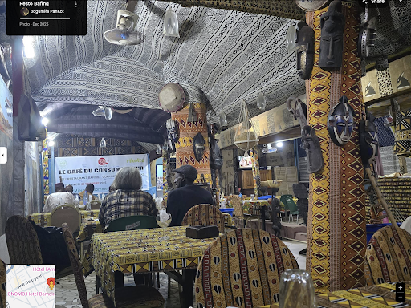
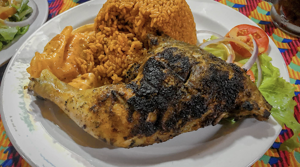
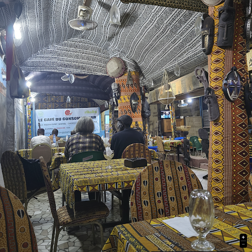
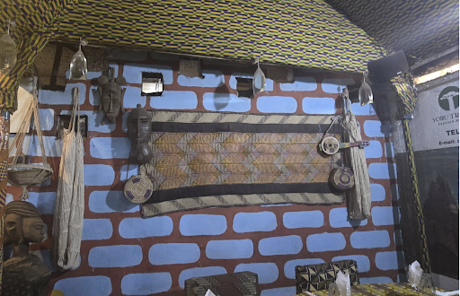
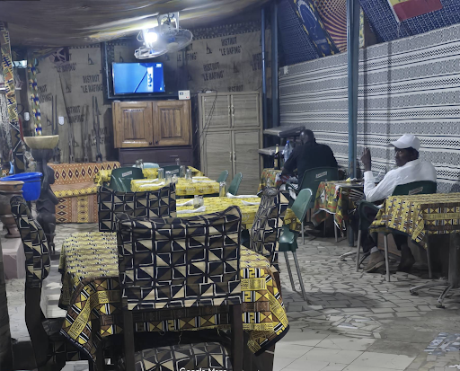

Signature
Poulet à la Mangue
3000FTender pieces of chicken slow-cooked in a rich, sweet and savory mango sauce, infused with secret spices from the Bafing region. A delicate balance of heat and fruit.

A culinary journey through the heart of Mali. We honor authentic recipes passed down through generations, prepared with fire, patience, and locally sourced ingredients.

Tender pieces of chicken slow-cooked in a rich, sweet and savory mango sauce, infused with secret spices from the Bafing region. A delicate balance of heat and fruit.
Crisp, golden-fried fillet of Capitaine fish, caught fresh from the Niger River. Served with a tangy laïoli citron-herbes et un accompagnement de riz épicé traditionnel.

Classic West African comfort. Chicken deeply marinated in lemon and mustard, slow-braised with masses of caramelized onions.

Une spécialité du Nord du Mali. Riche, sombre, terrhy sauce made from the leaves of the Corchorus olitorius plant, served with tender meat.

The ancient grain of the Sahel. Light, fluffy, and highly nutritious. The perfect accompaniment to any of our rich sauces.